Criando uma matriz de presência e ausência de espécies, com 20 espécies e 8 localidades.
set.seed(999)
tibble(
spec = paste0("sp", 1:20),
siteA = sample(c(0:1), replace=TRUE, size=20),
siteB = sample(c(0:1), replace=TRUE, size=20),
siteC = sample(c(0:1), replace=TRUE, size=20),
siteD = sample(c(0:1), replace=TRUE, size=20),
siteE = sample(c(0:1), replace=TRUE, size=20),
siteF = sample(c(0:1), replace=TRUE, size=20),
siteG = sample(c(0:1), replace=TRUE, size=20),
siteH = sample(c(0:1), replace=TRUE, size=20)
)->matpresaus
print.data.frame(matpresaus)## spec siteA siteB siteC siteD siteE siteF siteG siteH
## 1 sp1 0 1 1 0 0 0 0 0
## 2 sp2 1 0 0 1 1 1 0 1
## 3 sp3 0 0 0 0 0 0 1 0
## 4 sp4 0 0 1 0 0 1 1 0
## 5 sp5 0 1 0 0 1 0 1 0
## 6 sp6 1 1 0 1 0 1 1 1
## 7 sp7 0 0 0 0 0 1 1 0
## 8 sp8 1 0 1 1 0 1 1 0
## 9 sp9 1 0 1 1 0 0 0 0
## 10 sp10 1 0 1 0 0 1 0 1
## 11 sp11 0 0 1 1 1 1 1 1
## 12 sp12 0 0 1 0 0 1 1 0
## 13 sp13 1 1 1 1 1 0 0 1
## 14 sp14 0 1 1 0 0 0 0 1
## 15 sp15 0 1 0 0 0 0 1 1
## 16 sp16 0 1 0 1 1 1 1 1
## 17 sp17 1 0 1 0 1 1 0 0
## 18 sp18 1 0 0 0 0 0 1 0
## 19 sp19 0 0 0 1 0 0 1 0
## 20 sp20 0 0 1 0 0 0 0 1Agora uma matriz de abundância, com 30 espécies, 10 localidades, e abundâncias entre 0-20 nas localidades A-E, e 0-50 nas localidades F-J.
set.seed(999)
tibble(
spec = paste0("sp", 1:30),
siteA = sample(c(0:20), replace=TRUE, size=30),
siteB = sample(c(0:20), replace=TRUE, size=30),
siteC = sample(c(0:20), replace=TRUE, size=30),
siteD = sample(c(0:20), replace=TRUE, size=30),
siteE = sample(c(0:20), replace=TRUE, size=30),
siteF = sample(c(0:50), replace=TRUE, size=30),
siteG = sample(c(0:50), replace=TRUE, size=30),
siteH = sample(c(0:50), replace=TRUE, size=30),
siteI = sample(c(0:50), replace=TRUE, size=30),
siteJ = sample(c(0:50), replace=TRUE, size=30)
)->base1
print.data.frame(base1)## spec siteA siteB siteC siteD siteE siteF siteG siteH siteI siteJ
## 1 sp1 3 3 1 10 14 31 16 14 50 13
## 2 sp2 6 3 5 9 9 5 39 36 6 17
## 3 sp3 8 8 14 10 19 35 8 32 2 47
## 4 sp4 13 6 20 16 18 48 25 46 44 4
## 5 sp5 0 1 0 11 4 14 34 10 39 15
## 6 sp6 9 12 12 8 10 3 39 21 42 13
## 7 sp7 2 1 3 0 13 41 22 24 9 15
## 8 sp8 14 12 13 10 11 39 12 29 39 10
## 9 sp9 4 6 17 17 11 41 17 6 21 39
## 10 sp10 6 1 14 5 18 13 34 27 28 34
## 11 sp11 5 12 15 18 8 1 16 29 41 30
## 12 sp12 18 11 2 8 3 29 37 33 49 41
## 13 sp13 10 12 0 20 9 24 8 14 30 33
## 14 sp14 17 11 20 17 9 12 7 30 48 41
## 15 sp15 0 1 12 19 5 37 25 44 45 7
## 16 sp16 4 16 14 15 13 32 20 7 4 23
## 17 sp17 18 11 20 2 18 40 36 26 20 18
## 18 sp18 11 18 12 17 8 17 31 21 50 43
## 19 sp19 8 19 2 1 9 34 48 26 22 23
## 20 sp20 20 6 3 0 17 47 9 42 6 37
## 21 sp21 4 8 7 7 3 18 17 50 35 16
## 22 sp22 3 3 15 20 5 18 48 33 35 48
## 23 sp23 14 8 13 5 5 0 27 36 35 25
## 24 sp24 15 19 13 4 17 19 23 15 21 22
## 25 sp25 10 6 15 18 3 49 49 20 2 43
## 26 sp26 1 0 11 5 9 12 10 10 42 46
## 27 sp27 8 4 9 8 19 15 33 6 5 34
## 28 sp28 0 1 10 15 17 34 45 48 25 8
## 29 sp29 17 7 13 3 16 6 9 25 2 24
## 30 sp30 7 18 10 11 17 9 21 35 2 42Nota: Estou utilizando a função print.data.frame, pois o tibble sozinho mostra a tabela numa janela separada, e a tabela aparece incompleta no knit pro html.
Agora criando um sumário da base de dados criada.
summary(base1)## spec siteA siteB siteC
## Length:30 Min. : 0.00 Min. : 0.000 Min. : 0.0
## Class :character 1st Qu.: 4.00 1st Qu.: 3.000 1st Qu.: 5.5
## Mode :character Median : 8.00 Median : 7.500 Median :12.0
## Mean : 8.50 Mean : 8.133 Mean :10.5
## 3rd Qu.:13.75 3rd Qu.:12.000 3rd Qu.:14.0
## Max. :20.00 Max. :19.000 Max. :20.0
## siteD siteE siteF siteG siteH
## Min. : 0.00 Min. : 3.00 Min. : 0.00 Min. : 7.0 Min. : 6.00
## 1st Qu.: 5.00 1st Qu.: 8.00 1st Qu.:12.25 1st Qu.:16.0 1st Qu.:16.25
## Median :10.00 Median :10.50 Median :21.50 Median :24.0 Median :26.50
## Mean :10.30 Mean :11.23 Mean :24.10 Mean :25.5 Mean :26.50
## 3rd Qu.:16.75 3rd Qu.:17.00 3rd Qu.:36.50 3rd Qu.:35.5 3rd Qu.:34.50
## Max. :20.00 Max. :19.00 Max. :49.00 Max. :49.0 Max. :50.00
## siteI siteJ
## Min. : 2.00 Min. : 4.00
## 1st Qu.: 6.75 1st Qu.:15.25
## Median :29.00 Median :24.50
## Mean :26.63 Mean :27.03
## 3rd Qu.:41.75 3rd Qu.:40.50
## Max. :50.00 Max. :48.00load("C:/Users/alexa/OneDrive/Documentos/GitHub/econum/NEwR-2ed_code_data/NEwR2-Data/Doubs.RData") # Carregando os dados que o livro usa como exemplo
print.data.frame(spe)## Cogo Satr Phph Babl Thth Teso Chna Pato Lele Sqce Baba Albi Gogo Eslu Pefl
## 1 0 3 0 0 0 0 0 0 0 0 0 0 0 0 0
## 2 0 5 4 3 0 0 0 0 0 0 0 0 0 0 0
## 3 0 5 5 5 0 0 0 0 0 0 0 0 0 1 0
## 4 0 4 5 5 0 0 0 0 0 1 0 0 1 2 2
## 5 0 2 3 2 0 0 0 0 5 2 0 0 2 4 4
## 6 0 3 4 5 0 0 0 0 1 2 0 0 1 1 1
## 7 0 5 4 5 0 0 0 0 1 1 0 0 0 0 0
## 8 0 0 0 0 0 0 0 0 0 0 0 0 0 0 0
## 9 0 0 1 3 0 0 0 0 0 5 0 0 0 0 0
## 10 0 1 4 4 0 0 0 0 2 2 0 0 1 0 0
## 11 1 3 4 1 1 0 0 0 0 1 0 0 0 0 0
## 12 2 5 4 4 2 0 0 0 0 1 0 0 0 0 0
## 13 2 5 5 2 3 2 0 0 0 0 0 0 0 0 0
## 14 3 5 5 4 4 3 0 0 0 1 1 0 1 1 0
## 15 3 4 4 5 2 4 0 0 3 3 2 0 2 0 0
## 16 2 3 3 5 0 5 0 4 5 2 2 1 2 1 1
## 17 1 2 4 4 1 2 1 4 3 2 3 4 1 1 2
## 18 1 1 3 3 1 1 1 3 2 3 3 3 2 1 3
## 19 0 0 3 5 0 1 2 3 2 1 2 2 4 1 1
## 20 0 0 1 2 0 0 2 2 2 3 4 3 4 2 2
## 21 0 0 1 1 0 0 2 2 2 2 4 2 5 3 3
## 22 0 0 0 1 0 0 3 2 3 4 5 1 5 3 4
## 23 0 0 0 0 0 0 0 0 0 1 0 0 0 0 0
## 24 0 0 0 0 0 0 1 0 0 2 0 0 1 0 0
## 25 0 0 0 0 0 0 0 0 1 1 0 0 2 1 0
## 26 0 0 0 1 0 0 1 0 1 2 2 1 3 2 1
## 27 0 0 0 1 0 0 1 1 2 3 4 1 4 4 1
## 28 0 0 0 1 0 0 1 1 2 4 3 1 4 3 2
## 29 0 1 1 1 1 1 2 2 3 4 5 3 5 5 4
## 30 0 0 0 0 0 0 1 2 3 3 3 5 5 4 5
## Rham Legi Scer Cyca Titi Abbr Icme Gyce Ruru Blbj Alal Anan
## 1 0 0 0 0 0 0 0 0 0 0 0 0
## 2 0 0 0 0 0 0 0 0 0 0 0 0
## 3 0 0 0 0 0 0 0 0 0 0 0 0
## 4 0 0 0 0 1 0 0 0 0 0 0 0
## 5 0 0 2 0 3 0 0 0 5 0 0 0
## 6 0 0 0 0 2 0 0 0 1 0 0 0
## 7 0 0 0 0 0 0 0 0 0 0 0 0
## 8 0 0 0 0 0 0 0 0 0 0 0 0
## 9 0 0 0 0 1 0 0 0 4 0 0 0
## 10 0 0 0 0 0 0 0 0 0 0 0 0
## 11 0 0 0 0 0 0 0 0 0 0 0 0
## 12 0 0 0 0 0 0 0 0 0 0 0 0
## 13 0 0 0 0 0 0 0 0 0 0 0 0
## 14 0 0 0 0 0 0 0 0 0 0 0 0
## 15 0 0 0 0 1 0 0 0 0 0 0 0
## 16 0 1 0 1 1 0 0 0 1 0 0 0
## 17 1 1 0 1 1 0 0 0 2 0 2 1
## 18 2 1 0 1 1 0 0 1 2 0 2 1
## 19 2 1 1 1 2 1 0 1 5 1 3 1
## 20 3 2 2 1 4 1 0 2 5 2 5 2
## 21 3 2 2 2 4 3 1 3 5 3 5 2
## 22 3 3 2 3 4 4 2 4 5 4 5 2
## 23 0 0 0 0 0 0 0 0 1 0 2 0
## 24 0 1 0 0 0 0 0 2 2 1 5 0
## 25 0 0 1 0 0 0 0 1 1 0 3 0
## 26 2 2 1 1 3 2 1 4 4 2 5 2
## 27 3 3 1 2 5 3 2 5 5 4 5 3
## 28 4 4 2 4 4 3 3 5 5 5 5 4
## 29 5 5 2 3 3 4 4 5 5 4 5 4
## 30 5 3 5 5 5 5 5 5 5 5 5 5range(spe)## [1] 0 5apply(spe, 2, range)## Cogo Satr Phph Babl Thth Teso Chna Pato Lele Sqce Baba Albi Gogo Eslu Pefl
## [1,] 0 0 0 0 0 0 0 0 0 0 0 0 0 0 0
## [2,] 3 5 5 5 4 5 3 4 5 5 5 5 5 5 5
## Rham Legi Scer Cyca Titi Abbr Icme Gyce Ruru Blbj Alal Anan
## [1,] 0 0 0 0 0 0 0 0 0 0 0 0
## [2,] 5 5 5 5 5 5 5 5 5 5 5 5(ab <- table(unlist(spe)))##
## 0 1 2 3 4 5
## 435 108 87 62 54 64barplot(ab,
las = 1,
xlab = "Classe de abundância",
ylab = "Frequência",
col = rainbow(6:1)
)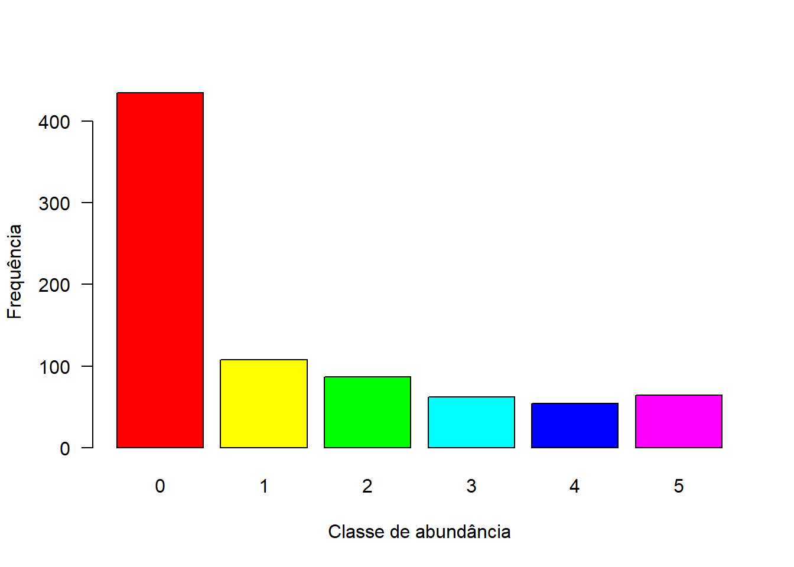
sum(spe == 0)## [1] 435sum(spe == 0) / (nrow(spe) * ncol(spe))## [1] 0.537037Respondendo algumas perguntas Onde há mais espécies de peixes? Existe uma tendência de riqueza em relação à direção do rio?
plot(spa,
asp = 1,
type = "n",
main = "N de espécies nos locais amostrados",
xlab = "x coordinate (km)",
ylab = "y coordinate (km)"
)
lines(spa, col = "light blue")
text(spa, row.names(spa), cex = 1, col = "blue")
text(68, 20, "Nascente", cex = 1.2, col = "blue")
text(15, 35, "Foz", cex = 1.2, col = "blue")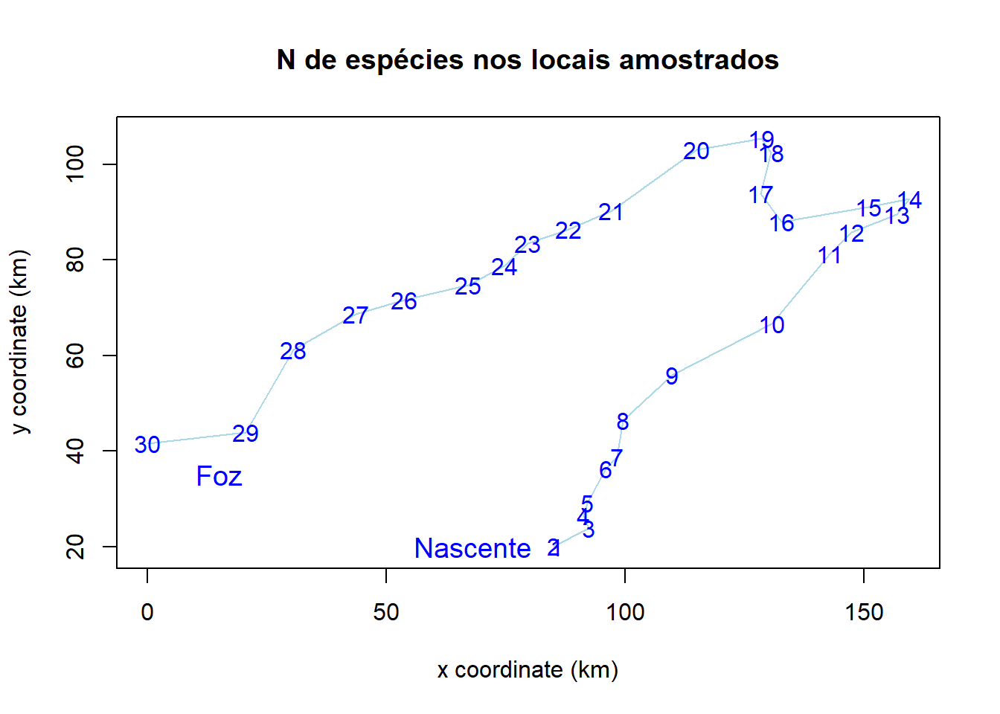
É observado que a maior riqueza está ba foz. Sim, existe uma tendência clara na riqueza: existem mais espécies quanto mais perto da foz. Isso pode ser porque, na maioria dos rios, os estuários também possuem uma grande abundância de espécies marinhas, muitas mais até do que as espécies de água doce. Algumas espécies marinhas também podem ir rio acima em certas fases ontogenéticas, como em estágios larvais e na reprodução.
Mas e quanto à abundância? se distribui da mesma forma?
plot(env$dfs,
spe$Satr,
type = "l",
col = 4,
main = "Abundância",
xlab = "Distância da nascente [km]",
ylab = "Abundância 'crua' (contagem simples) "
)
lines(env$dfs, spe$Thth, col = 3)
lines(env$dfs, spe$Baba, col = "orange")
lines(env$dfs, spe$Abbr, col = 2)
lines(env$dfs, spe$Babl, col = 1, lty = "dotted")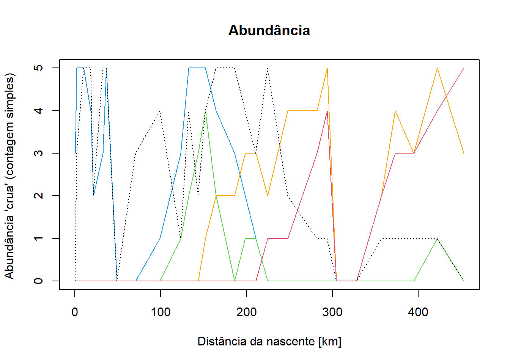
É observado que a abundância não necessariamente possui o mesmo padrão de distribuição ao longo do rio em relação à riqueza, que está concentrada na foz. Algumas espécies são mais abundantes na nascente, outras na pate média do rio, outras na foz.
Claramente existem outras variáveis ambientais além da distância da nascente influenciando a abundância das espécies. Quais variáveis ambientais podem explicar isso?
plot(spa,
asp = 1,
cex.axis = 0.8,
main = "Elevação",
pch = 21,
col = "white",
bg = "red",
cex = 5 * env$ele / max(env$ele),
xlab = "x",
ylab = "y"
)
lines(spa, col = "light blue")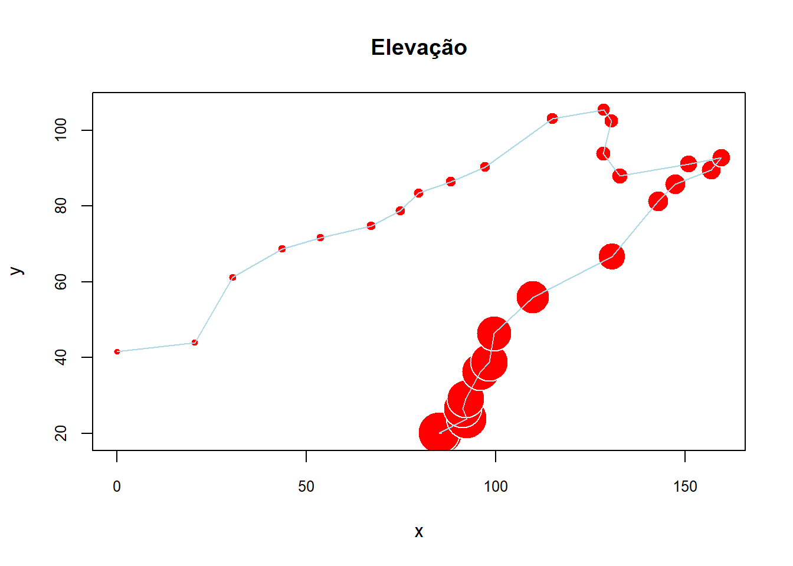
plot(spa,
asp = 1,
cex.axis = 0.8,
main = "Descarga",
pch = 21,
col = "white",
bg = "blue",
cex = 5 * env$dis / max(env$dis),
xlab = "x",
ylab = "y"
)
lines(spa, col = "light blue")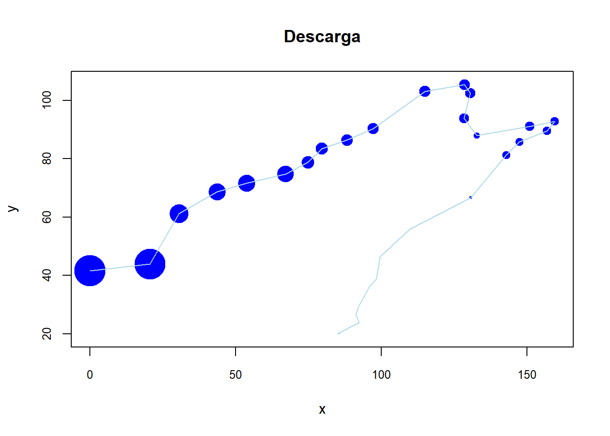
plot(spa,
asp = 1,
cex.axis = 0.8,
main = "Oxigênio",
pch = 21,
col = "white",
bg = "green3",
cex = 5 * env$oxy / max(env$oxy),
xlab = "x",
ylab = "y"
)
lines(spa, col = "light blue")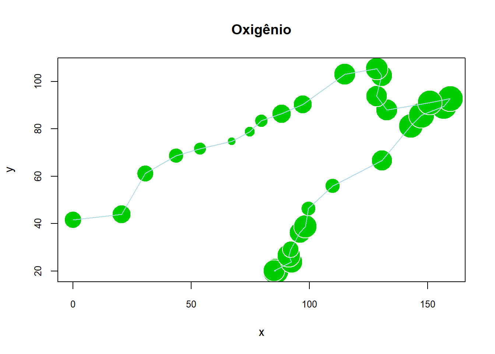
plot(spa,
asp = 1,
cex.axis = 0.8,
main = "Nitrato",
pch = 21,
col = "white",
bg = "brown",
cex = 5 * env$nit / max(env$nit),
xlab = "x",
ylab = "y"
)
lines(spa, col = "light blue")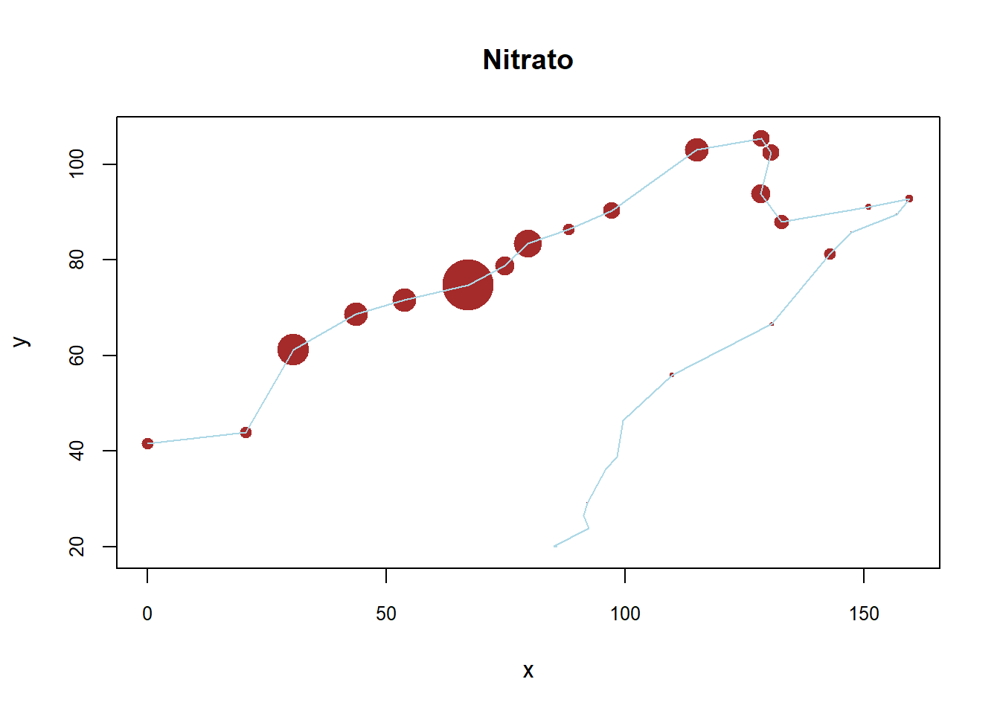
O rio possui mais elevação perto da nascente, e mais descarga perto da foz, o que é comum para um rio. Esses podem ser fatores que influenciam tanto na riqueza quanto na abundância das espécies que ocorrem mais próximas à nascente e à foz, pois podem afetar fatores como o fluxo de nutrientes na água. Além disso, esse grau de elevação e descarga também indica que larvas planctônicas de espécies que desovam na nascente podem ir parar na foz, concedendo uma maior riqueza.
O rio possui mais oxigênio na nascente e na parte média, e possui mais nitrato na parte média-baixa. As espécies que são abundantes no médio e médio-alto rio provavelmente favoerecem águas com mais oxigênio, enquanto espécies do médio e médio-baixo rio favorecem águas com mais nitrato.
Nota: Aparentemente o rmarkdown tem algum problema com a função dev.new e não plota os gráficos quando faço knit pra html, então plotei os gráficos das variáveis ambientais separados.
Utilizando a base de dados os peixes da Suíça:
# Removendo as localidades vazias
spe <- spe[-8, ]
env <- env[-8, ]
spa <- spa[-8, ]
# Aplicado as medidas de dissimilaridade
library(vegan)
spe.db <- vegdist(spe) # método de bray
spe.dbln <- vegdist(log1p(spe)) # abundâncias logaritmizadas
spe.norm <- decostand(spe, "nor")
spe.dc <- dist(spe.norm) # matriz de chord distance
spe.hel <- decostand(spe, "hel")
spe.dh <- dist(spe.hel) # matriz de distância de hellinger
head(spe.db)## [1] 0.6000000 0.6842105 0.7500000 0.8918919 0.7500000 0.6842105head(spe.dbln)## [1] 0.5509095 0.6280761 0.7446012 0.8664653 0.7657643 0.6519273head(spe.dc)## [1] 0.7653669 0.9235374 1.0432236 1.2786132 1.1153793 0.8873116head(spe.dh)## [1] 0.8420247 0.9391305 1.0616631 1.2308244 1.1153793 0.9391305Nota: Aparentemente o rmarkdown não acredita de jeito nenhum que a função coldiss existe, então eu tive que catar a definição da função e colocar nesse documento.
# coldiss()
# Color plots of a dissimilarity matrix, without and with ordering
#
# License: GPL-2
# Author: Francois Gillet, 23 August 2012
#
"coldiss" <- function(D, nc = 4, byrank = TRUE, diag = FALSE)
{
library(gclus)
if (max(D)>1) D <- D/max(D)
if (byrank) {
spe.color <- dmat.color(1-D, cm.colors(nc))
}
else {
spe.color <- dmat.color(1-D, byrank=FALSE, cm.colors(nc))
}
spe.o <- order.single(1-D)
speo.color <- spe.color[spe.o, spe.o]
op <- par(mfrow=c(1,2), pty="s")
if (diag) {
plotcolors(spe.color, rlabels=attributes(D)$Labels,
main="Dissimilarity Matrix",
dlabels=attributes(D)$Labels)
plotcolors(speo.color, rlabels=attributes(D)$Labels[spe.o],
main="Ordered Dissimilarity Matrix",
dlabels=attributes(D)$Labels[spe.o])
}
else {
plotcolors(spe.color, rlabels=attributes(D)$Labels,
main="Dissimilarity Matrix")
plotcolors(speo.color, rlabels=attributes(D)$Labels[spe.o],
main="Ordered Dissimilarity Matrix")
}
par(op)
}
# Usage:
# coldiss(D = dissimilarity.matrix, nc = 4, byrank = TRUE, diag = FALSE)
# If D is not a dissimilarity matrix (max(D) > 1), then D is divided by max(D)
# nc number of colours (classes)
# byrank= TRUE equal-sized classes
# byrank= FALSE equal-length intervals
# diag = TRUE print object labels also on the diagonal
# Example:
# coldiss(spe.dj, nc=9, byrank=F, diag=T)Agora, criando as matrizes de dissimilaridade
coldiss(spe.db, diag = TRUE) #plotando a dissimilaridade de bray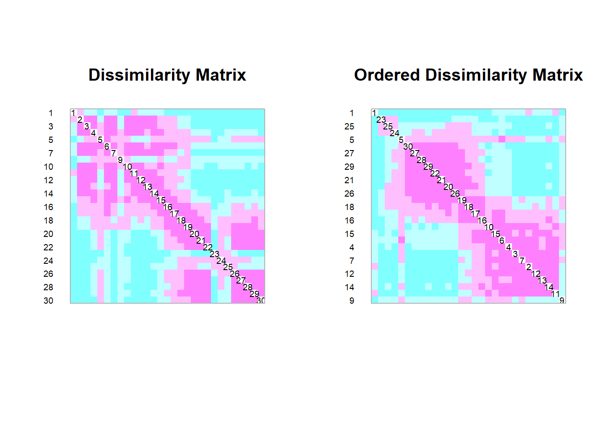
coldiss(spe.dbln, diag = TRUE) # plotando as abundâncias logaritmizadas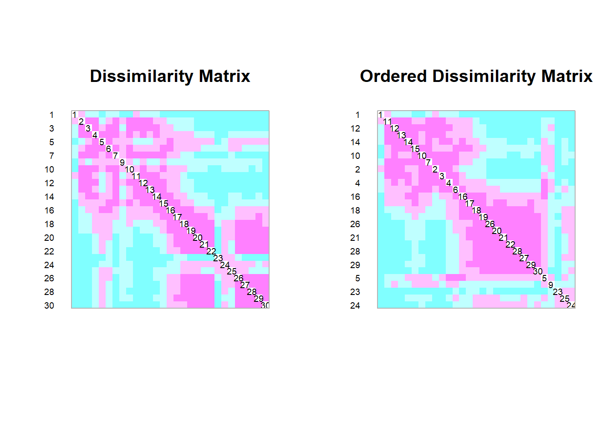
coldiss(spe.dc, diag = TRUE) # plotando a chord distance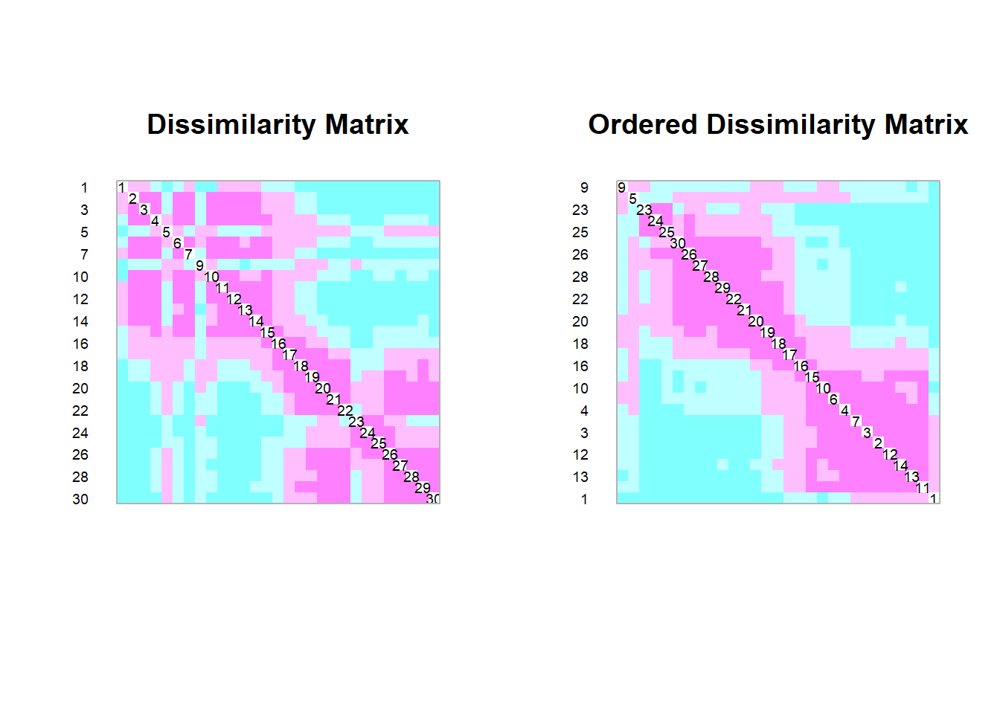
coldiss(spe.dh, diag = TRUE) # plotando a distância de hellinger 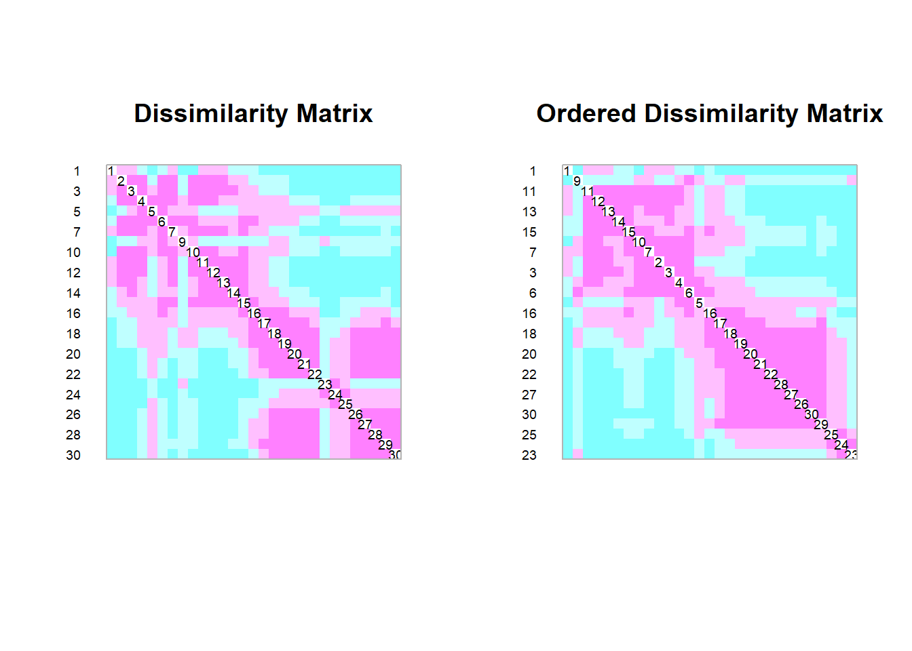
Pergunta: A descarga d’água no rio afeta a composição das comunidades de peixes?
library(vegan)
euc_dist<-vegdist(spe, method = "euclidean") #medindo a distância euclidiana
euc_dist## 1 2 3 4 5 6 7
## 2 5.385165
## 3 7.416198 2.449490
## 4 7.874008 4.123106 3.000000
## 5 10.816654 10.677078 10.862780 9.219544
## 6 7.348469 4.582576 4.123106 2.828427 8.185353
## 7 6.855655 2.449490 2.000000 3.605551 10.488088 3.605551
## 9 7.810250 8.717798 9.380832 8.774964 9.380832 6.708204 8.485281
## 10 6.708204 5.099020 5.291503 5.000000 9.273618 3.605551 4.472136
## 11 4.472136 3.316625 5.000000 5.477226 10.246951 5.291503 4.795832
## 12 6.708204 3.162278 3.464102 4.582576 11.045361 4.795832 3.162278
## 13 7.071068 4.358899 5.196152 6.164414 11.532563 6.633250 5.385165
## 14 9.110434 6.324555 6.164414 6.557439 11.916375 7.000000 6.324555
## 15 9.899495 7.810250 7.681146 7.483315 10.816654 6.633250 6.855655
## 16 11.090537 9.899495 9.797959 9.327379 10.198039 8.426150 9.055385
## 17 10.630146 9.486833 9.486833 8.774964 9.797959 8.062258 9.055385
## 18 9.848858 9.591663 9.899495 8.660254 9.055385 7.810250 9.380832
## 19 11.704700 11.135529 11.045361 10.148892 9.380832 8.888194 10.770330
## 20 13.453624 14.212670 14.628739 13.453624 10.770330 12.206556 14.212670
## 21 14.456832 15.362291 15.811388 14.525839 11.489125 13.601471 15.556349
## 22 16.643317 17.663522 18.110770 16.763055 13.416408 15.779734 17.663522
## 23 3.872983 7.483315 9.055385 9.000000 10.583005 7.937254 8.485281
## 24 7.071068 9.539392 10.816654 10.583005 11.357817 9.486833 10.246951
## 25 5.291503 8.306624 9.643651 9.273618 9.746794 8.246211 9.110434
## 26 11.135529 12.609520 13.304135 12.409674 10.723805 11.224972 12.922848
## 27 15.362291 16.462078 16.881943 15.811388 13.076697 14.696938 16.583124
## 28 16.522712 17.549929 18.000000 16.941074 14.352700 15.905974 17.606817
## 29 18.761663 19.364917 19.621417 18.384776 15.524175 17.776389 19.364917
## 30 20.396078 21.377558 21.794495 20.542639 17.117243 19.849433 21.517435
## 9 10 11 12 13 14 15
## 2
## 3
## 4
## 5
## 6
## 7
## 9
## 10 6.480741
## 11 7.549834 4.582576
## 12 8.717798 5.477226 3.872983
## 13 10.049876 6.855655 4.000000 3.316625
## 14 10.583005 7.615773 6.244998 4.242641 3.316625
## 15 9.746794 6.855655 7.745967 6.403124 6.633250 5.000000
## 16 10.862780 8.485281 10.049876 9.591663 9.746794 8.944272 5.916080
## 17 9.899495 8.246211 9.219544 9.273618 9.643651 9.380832 8.185353
## 18 8.602325 7.874008 8.774964 9.380832 9.949874 9.797959 8.660254
## 19 9.486833 9.273618 11.000000 11.313708 12.041595 11.832160 10.630146
## 20 11.489125 12.727922 13.527749 14.422205 15.000000 14.966630 13.674794
## 21 13.266499 14.142136 14.662878 15.684387 16.031220 16.062378 15.066519
## 22 15.033296 16.248077 16.941074 17.832555 18.303005 18.165902 16.763055
## 23 6.324555 6.633250 5.744563 8.366600 8.774964 10.392305 10.630146
## 24 7.549834 8.544004 8.124038 10.148892 10.583005 11.789826 11.747340
## 25 7.280110 7.000000 6.782330 9.110434 9.486833 10.723805 10.583005
## 26 10.148892 11.445523 11.747340 13.000000 13.490738 13.892444 13.190906
## 27 13.892444 15.264338 15.748016 16.703293 17.146428 17.117243 16.062378
## 28 14.899664 16.309506 16.822604 17.720045 18.193405 18.220867 17.175564
## 29 17.521415 18.303005 18.761663 19.416488 19.646883 19.313208 18.330303
## 30 19.467922 20.371549 20.736441 21.610183 21.863211 21.931712 21.023796
## 16 17 18 19 20 21 22
## 2
## 3
## 4
## 5
## 6
## 7
## 9
## 10
## 11
## 12
## 13
## 14
## 15
## 16
## 17 6.164414
## 18 7.615773 3.464102
## 19 9.165151 6.633250 6.000000
## 20 12.649111 9.380832 7.615773 6.324555
## 21 13.928388 11.224972 9.380832 7.874008 3.741657
## 22 15.556349 13.416408 11.489125 10.583005 6.480741 4.000000
## 23 11.489125 10.295630 9.055385 10.488088 11.916375 13.114877 15.362291
## 24 12.449900 10.723805 9.110434 9.746794 10.148892 11.269428 13.304135
## 25 11.180340 10.148892 8.660254 9.539392 10.630146 11.618950 13.964240
## 26 13.076697 10.816654 8.774964 7.810250 5.385165 5.385165 7.549834
## 27 15.329710 13.304135 11.532563 10.246951 6.244998 4.582576 5.000000
## 28 16.370706 14.352700 12.489996 11.489125 7.745967 6.000000 5.099020
## 29 17.058722 14.662878 13.076697 12.767145 9.000000 7.000000 5.567764
## 30 19.621417 17.117243 15.652476 15.000000 11.180340 9.000000 8.185353
## 23 24 25 26 27 28 29
## 2
## 3
## 4
## 5
## 6
## 7
## 9
## 10
## 11
## 12
## 13
## 14
## 15
## 16
## 17
## 18
## 19
## 20
## 21
## 22
## 23
## 24 4.358899
## 25 3.000000 3.741657
## 26 9.433981 7.071068 8.000000
## 27 14.035669 11.916375 12.649111 5.291503
## 28 15.231546 13.076697 13.964240 7.000000 3.872983
## 29 17.804494 15.874508 16.431677 9.899495 6.633250 5.567764
## 30 19.416488 17.832555 18.055470 11.916375 9.165151 7.280110 6.480741library(usedist)
mean(dist_subset(euc_dist, c(1:10))) #calculando a similaridade média dos locais onde a descagar d'água (dfs, de acordo com os dados em env) é <100.## [1] 6.307065mean(dist_subset(euc_dist, c(11:20))) #similaridade média dos locais onde dfs é >100 e <250## [1] 9.450489mean(dist_subset(euc_dist, c(21:29))) #similaridade média dos locais onde dfs é >250## [1] 10.25096clust_rio_euc<-hclust(euc_dist, method = "complete") #plotando o dendograma
clust_graf_euc<-plot(clust_rio_euc, hang=-1)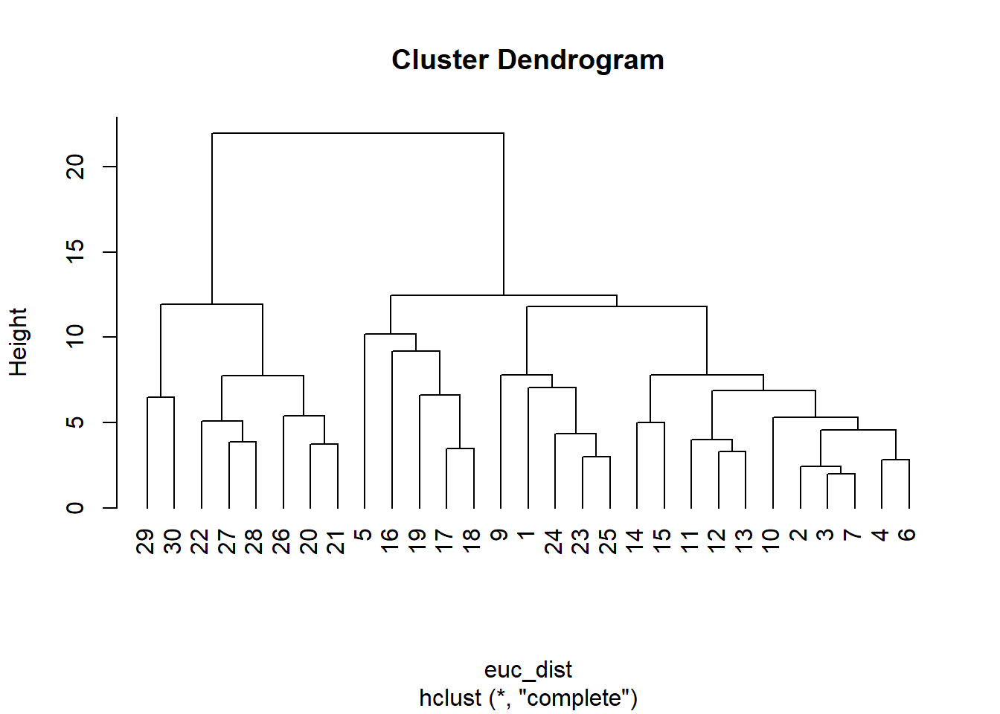
library(dendextend)
clust_rio_euc2<-as.dendrogram(clust_rio_euc) # transformando o cluster num objeto para poder editar
colors<-c("#E69F00", "#E69F00", "#E69F00", "#E69F00", "#E69F00", "#E69F00", "#E69F00", "#E69F00", "#E69F00", "#E69F00", "#56B4E9", "#56B4E9", "#56B4E9", "#56B4E9", "#56B4E9", "#56B4E9", "#56B4E9", "#56B4E9", "#56B4E9", "#56B4E9", "#009E73", "#009E73", "#009E73", "#009E73", "#009E73", "#009E73", "#009E73", "#009E73", "#009E73") # definindo as cores que serão usadas
colorCode<-c(alto=colors[1:10], medio=colors[11:20], baixo=colors[21:29])
labels_colors(clust_rio_euc2) <- colorCode[order.dendrogram(clust_rio_euc2)]
plot(clust_rio_euc2, main ="foi punk pra conseguir colorir")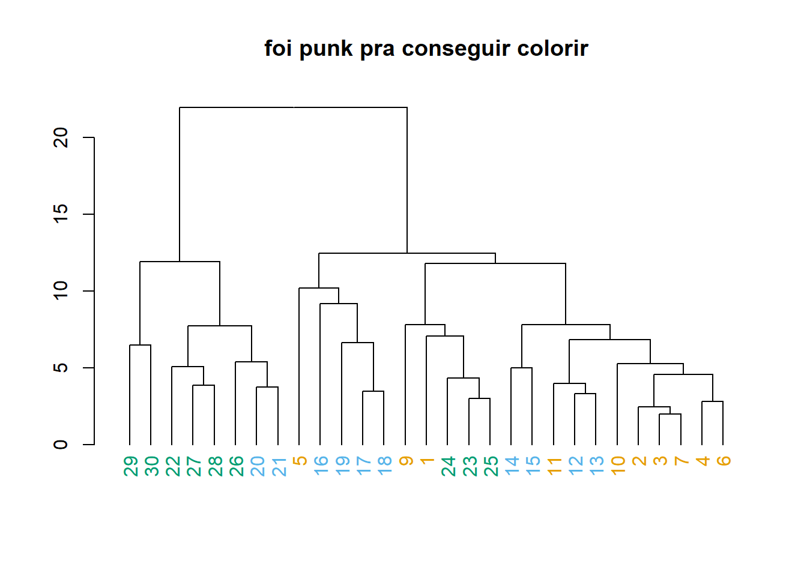 Pela média das similaridades e pelo dendograma vemos que, possivelmente, maior descarga d’água contribui para uma maior similaridade entre os locais. Utilizando a distância euclidiana, foi obsevado que os locais com dfs>250 apresentaram mais similaridade, e os com dfs<100 apresentaram menos similaridade. Também é possível observar nos clusters do dendograma que, apesar dos locais geograficamente próximos serem mais similares, existem outliers, como os locais 10, 9 e 5.
Isso pode ser dar pois as larvas planctônicas desses peixes são levadas na corrente d’água. Talvez os locais com mais descarga sejam mais similares entre si por conta disso: a corrente numa descarga mais forte é mais propensa a levar peixes de uma comunidade para outra, misturando as comunidades em locais com mais descarga e isolando as comunidades em locais com menos descarga.
Já como no útilmo exercício foi medida a distância pra spe, aqui vou utilizar o dendograma já feito pra ver os grupos.
Só olhando, acho que vejo 5 grupos claros, divididos em 2 grandes grupos. Então vou tentar k=5.
grup_rio<-cutree(clust_rio_euc, k=5) # olhando pro dendograma, acredito que dá pra divir em 5 grupos
table(grup_rio) ## grup_rio
## 1 2 3 4 5
## 5 11 5 6 2plot(clust_rio_euc)
rect.hclust(clust_rio_euc, k = 5, border = 2:5)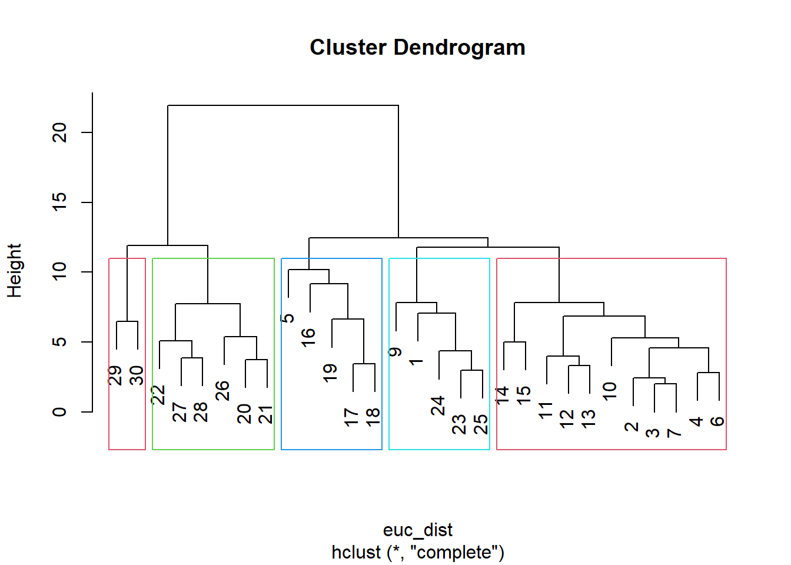
k5<-kmeans(spe, centers = 5, nstart=1)
k5 # Aqui dá pra ver muita coisa, inclusive a qual cluster (1,2 uo 3) cada amostra do rio pertence. Dá pra ver a média de cada variável entre os clusters ## K-means clustering with 5 clusters of sizes 2, 11, 5, 6, 5
##
## Cluster means:
## Cogo Satr Phph Babl Thth Teso Chna Pato
## 1 0.0 0.500000 0.5000000 0.500000 0.500000 0.5000000 1.500000 2.000000
## 2 1.0 4.090909 4.3636364 3.909091 1.090909 0.8181818 0.000000 0.000000
## 3 0.0 0.600000 0.2000000 0.600000 0.000000 0.0000000 0.200000 0.000000
## 4 0.0 0.000000 0.3333333 1.166667 0.000000 0.0000000 1.666667 1.333333
## 5 0.8 1.600000 3.2000000 3.800000 0.400000 1.8000000 0.800000 2.800000
## Lele Sqce Baba Albi Gogo Eslu Pefl Rham Legi
## 1 3.0000000 3.500000 4.0000000 4.0 5.0000000 4.5000000 4.5000000 5 4.000000
## 2 0.6363636 1.090909 0.2727273 0.0 0.5454545 0.4545455 0.2727273 0 0.000000
## 3 0.2000000 1.800000 0.0000000 0.0 0.6000000 0.2000000 0.0000000 0 0.200000
## 4 2.0000000 3.000000 3.6666667 1.5 4.1666667 2.8333333 2.1666667 3 2.666667
## 5 3.4000000 2.000000 2.0000000 2.0 2.2000000 1.6000000 2.2000000 1 0.800000
## Scer Cyca Titi Abbr Icme Gyce Ruru Blbj Alal
## 1 3.500000 4.000000 4.0000000 4.500000 4.5 5.000000 5.00000000 4.500000 5.0
## 2 0.000000 0.000000 0.3636364 0.000000 0.0 0.000000 0.09090909 0.000000 0.0
## 3 0.200000 0.000000 0.2000000 0.000000 0.0 0.600000 1.60000000 0.200000 2.0
## 4 1.666667 2.166667 4.0000000 2.666667 1.5 3.833333 4.83333333 3.333333 5.0
## 5 0.600000 0.800000 1.6000000 0.200000 0.0 0.400000 3.00000000 0.200000 1.4
## Anan
## 1 4.5
## 2 0.0
## 3 0.0
## 4 2.5
## 5 0.6
##
## Clustering vector:
## 1 2 3 4 5 6 7 9 10 11 12 13 14 15 16 17 18 19 20 21 22 23 24 25 26 27
## 3 2 2 2 5 2 2 3 2 2 2 2 2 2 5 5 5 5 4 4 4 3 3 3 4 4
## 28 29 30
## 4 1 1
##
## Within cluster sum of squares by cluster:
## [1] 21.0000 139.6364 69.2000 81.0000 128.4000
## (between_SS / total_SS = 77.3 %)
##
## Available components:
##
## [1] "cluster" "centers" "totss" "withinss" "tot.withinss"
## [6] "betweenss" "size" "iter" "ifault"Os 5 clusters, divididos bem do jeito que eu imaginaria que seriam.
library(factoextra)
fviz_cluster(k5, data = spe)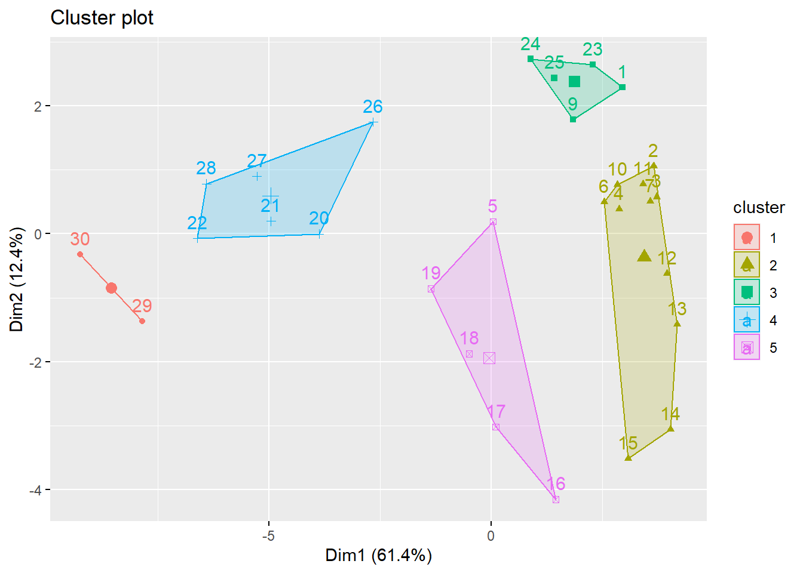 Agora vou testar o número estatisticamente ideal de clusters.
fviz_nbclust(spe, kmeans, method = "silhouette")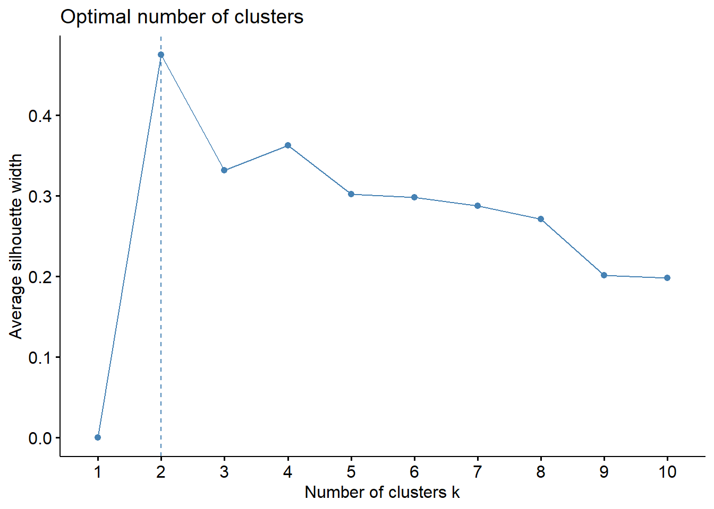 Parece que na verdade são dois. Agora vou re-fazer o plot de distância com k=2.
k2<-kmeans(spe, centers =2, nstart=1)
fviz_cluster(k2, data = spe)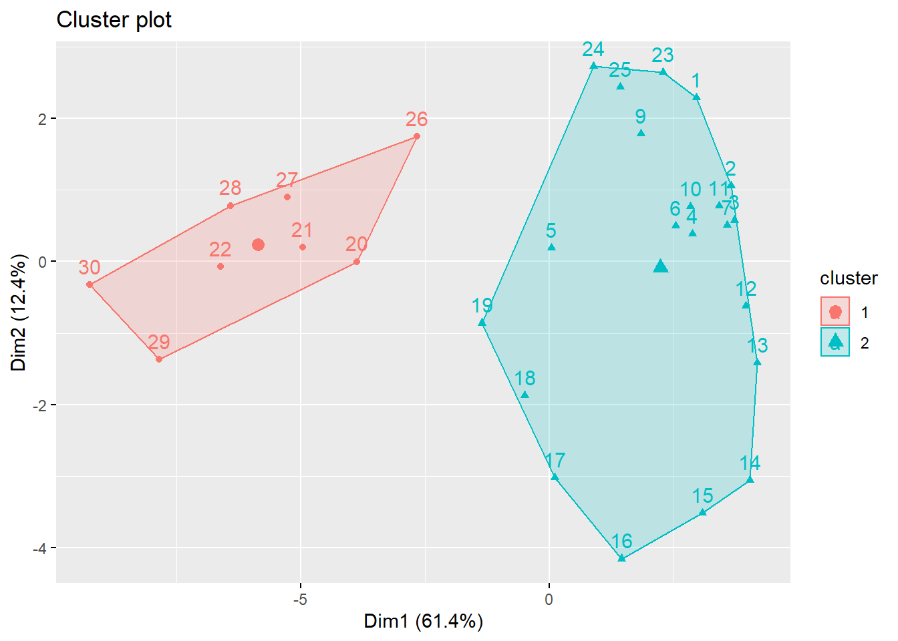 Agora observando isso no dendograma:
plot(clust_rio_euc)
rect.hclust(clust_rio_euc, k = 2, border = 2:5)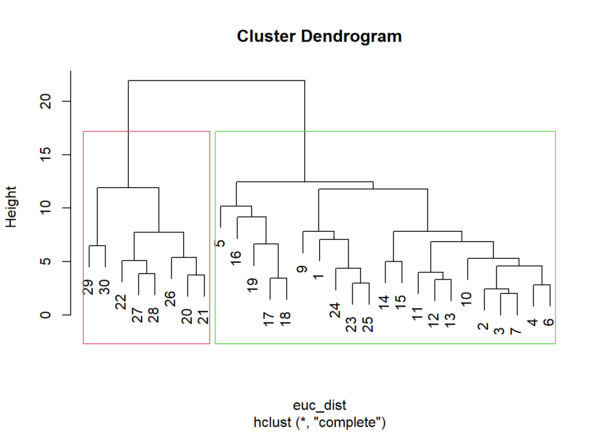 O número ideal de clusters são justamente os 2 grandes grupos que eu achei que possuiriam 5 grupos dentros. Agora, o que poderia estar influenciando nessa diferença entre os dois clusters? Para avaliar isso, é necessário ver onde ambos estão localizados no rio.
plot(spa,
asp = 1,
type = "n",
xlab = "x coordinate (km)",
ylab = "y coordinate (km)"
)
lines(spa, col = "grey") # colorindo o plot
text(spa[1:19,], col = "blue")
text(spa[20:22,], rownames(spa[19:21,]), col = "red")
text(spa[23:25,], rownames(spa[22:24,]), col = "blue")
text(spa[26:30,], rownames(spa[25:29,]), col = "red")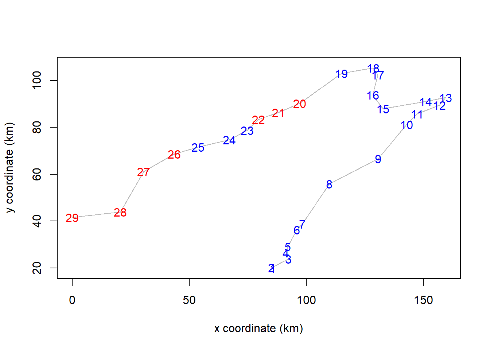 Aqui um plot onde o vermelho representa o cluster 1, e o azul representa o cluster 2. É possível observar que desde a nascente até mais ou menos a parte média do rio, as comunidades fazem parte do cluster 2, mais abaixo no médio rio do cluster 1, brevemente do cluster 2 no médio-baixo rio, e novamente cluster 1 na foz. Por conta da “interrupção” na distribuição do clusters, penso que talvez esses grupos de similaridade estão relacionados com fatores ambientais que são distribuídos de forma menos linear no rio, como oxigênio e nitrato.
exemplo: Uma usina hidroelétrica está para ser construída no rio e o governo encomendou estudos de impacto ambiental que precisam demonstrar várias coisas. É necessário analisar tanto a comunidade de peixes como as condições físico-quimicas do rio.
Primeiro, fazendo uma PCA com as variáveis ambientais:
env_pca<-env[,-1][,-4]# retirando as colunas dfs e dis
princomp(env_pca)-> pca_env
summary(pca_env)## Importance of components:
## Comp.1 Comp.2 Comp.3 Comp.4
## Standard deviation 265.7458613 11.064942601 8.908097576 6.7050299489
## Proportion of Variance 0.9962717 0.001727202 0.001119476 0.0006342292
## Cumulative Proportion 0.9962717 0.997998899 0.999118374 0.9997526036
## Comp.5 Comp.6 Comp.7 Comp.8
## Standard deviation 4.010801606 9.586972e-01 6.966768e-01 2.031298e-01
## Proportion of Variance 0.000226938 1.296605e-05 6.847112e-06 5.820925e-07
## Cumulative Proportion 0.999979542 9.999925e-01 9.999994e-01 9.999999e-01
## Comp.9
## Standard deviation 6.693884e-02
## Proportion of Variance 6.321223e-08
## Cumulative Proportion 1.000000e+00Pelo summary é possível observar que a maior parte da variação está de longe em Comp. 1.
library(tidyverse)
library(factoextra)
pca_env$scores %>%
as.tibble() %>%
mutate(setor=ifelse(Comp.1<0,"medio-baixo", "alto"))-> env_set
fviz_pca_ind(pca_env,
geom.ind = "point", # show points only (nbut not "text")
col.ind = env_set$setor, # color by groups
palette = c("#009999", "#0000FF"),
addEllipses = TRUE, # Concentration ellipses
legend.title = "Groups"
)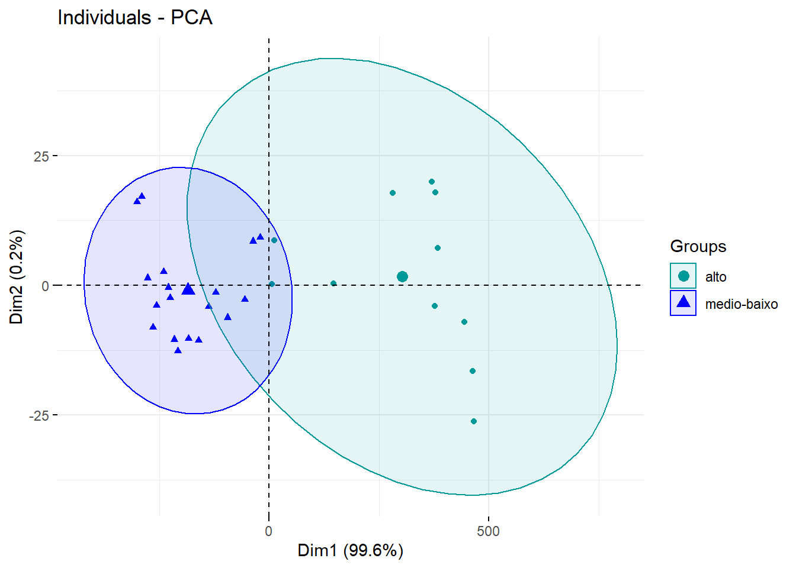 É observado que o eixo horizontal explica quase toda a variação nos dados. Também existe um overlap considerável entre os dois grupos.
Agora, fazendo uma NMDS dos dados das espécies.
library(vegan)
nmds<-metaMDS(spe) ## Run 0 stress 0.07477809
## Run 1 stress 0.1248198
## Run 2 stress 0.08841669
## Run 3 stress 0.1134129
## Run 4 stress 0.08917038
## Run 5 stress 0.0738367
## ... New best solution
## ... Procrustes: rmse 0.01960989 max resid 0.09439325
## Run 6 stress 0.1111023
## Run 7 stress 0.08841674
## Run 8 stress 0.0742934
## ... Procrustes: rmse 0.01374155 max resid 0.06390472
## Run 9 stress 0.07477827
## Run 10 stress 0.07477823
## Run 11 stress 0.1223636
## Run 12 stress 0.08841673
## Run 13 stress 0.08845295
## Run 14 stress 0.1127535
## Run 15 stress 0.09288416
## Run 16 stress 0.120581
## Run 17 stress 0.07376231
## ... New best solution
## ... Procrustes: rmse 0.003800054 max resid 0.01466883
## Run 18 stress 0.1127442
## Run 19 stress 0.1104323
## Run 20 stress 0.07477802
## *** No convergence -- monoMDS stopping criteria:
## 20: stress ratio > sratmaxnmds_dat<-data.frame(nmds$points, spe)
colnames(nmds_dat) <- c("MDS1","MDS2", "setor")
nmds_dat %>%
ggplot(aes(MDS1, MDS2, color=setor))+geom_point()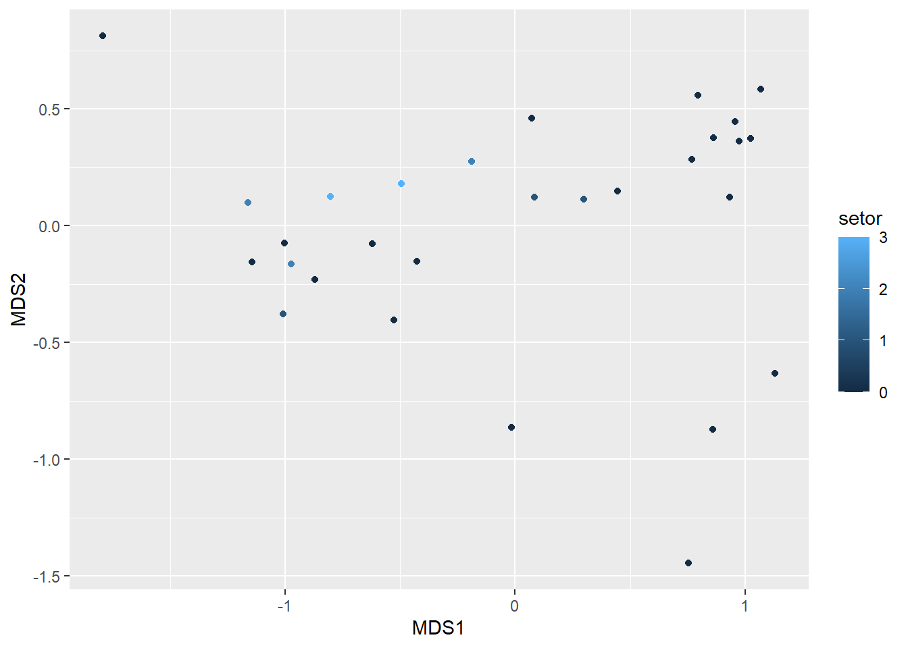 Existe uma certa semelhança na distribuição com a PCA dos dados ambientais, onde as comunidades do alto rio se concenctram na parte direita do gráfico, e as espécies do médio-baixo na parte esquerda e central. Isso signiica que provavelmente a distribuição das variaveis ambientais (que são explicados quase que somente por PC1) afeta essa distribuição matemática das comunidades.
Dessa forma, acredito que dá pra dividir o rio em duas partes. Utilizando o método K-Means supondo clusters:
k2_spe<-kmeans(spe, centers =2, nstart=1)
fviz_cluster(k2_spe, data = spe)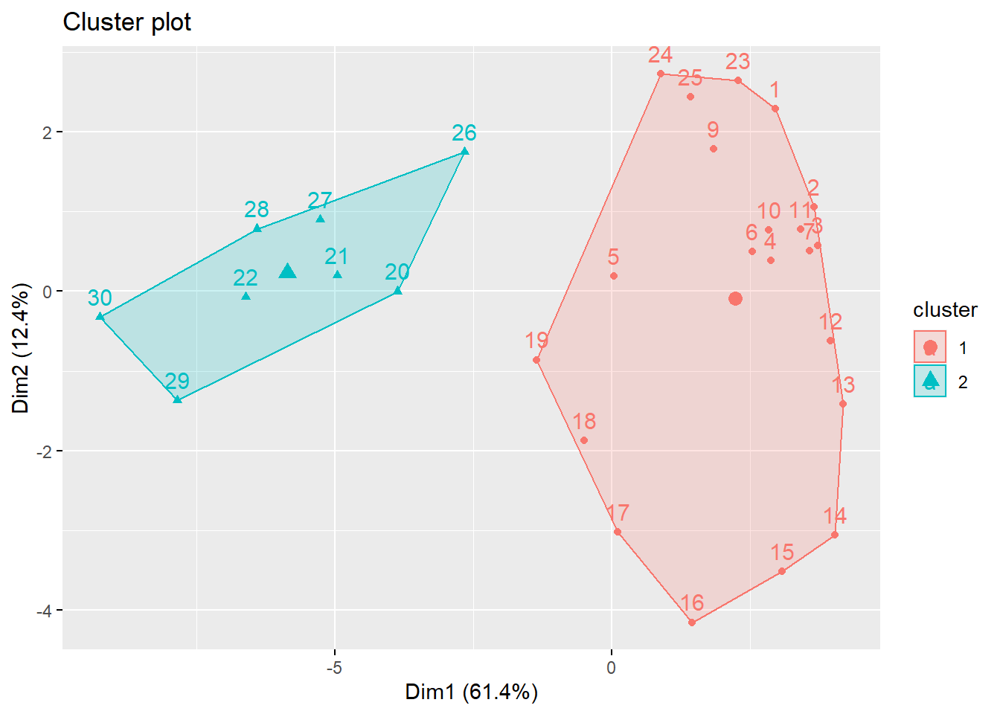 Agora para os dados ambientais
k2<-kmeans(env, centers =2, nstart=1)
fviz_cluster(k2, data = env)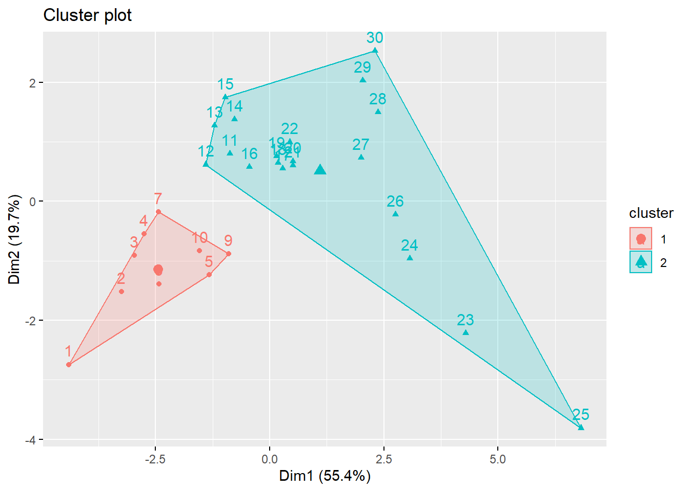
Com base em todas essas análises, princiapalmente no PCA e NMDS, é observado que várias espécies do alto rio também estão presente no baixo-médio rio, mas o contrário não é verdade. A hidrelética, se construida no alto rio, irá prejudicar as comunidades de lá, porém, parte da diversidade do alto rio é representa em comunidades do baixo-médio rio. Seria menos danoso construir a hidrelétrica no alto rio.